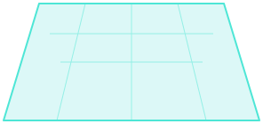

Hi, I’m Pip
Park it. Come back later.
Only your thought is needed.
No reminder by default. Add one whenever you like.
Say what’s on your mind.
Review the words before you park them.
Nothing is parked until you choose Park thought.
Add only what will help you reconnect later.
When would help?
You can revisit manually at any time.
All thoughts
Find a thought
Filter & sort
Original context
Smallest next action
AR camera preview
Place Pip in your space.
Pip uses the camera to find a suitable surface and show your thought orbs around you.
Your camera, your choice
AR needs live camera access. You can change access in your browser settings. Your saved thoughts remain available in 2D.
Permission is requested next by your browser, not on this screen.
Find a place for Pip.
Move your phone slowly across a table or floor.


Tap a surface to choose a spot
Welcome back! 👋
Tap any orb to select. Or use the buttons below.
Settings
How Pip looks and how it reaches you.
Sound
Soft sounds when you park, select and complete thoughts. Pip stays quiet while you type or speak.
Reminders
Room AR and hand gestures
Your data
Thoughts are saved in this browser on this device. Nothing is uploaded or synced.
Choose your Pip.
Swipe to browse. Tap Select avatar to switch.